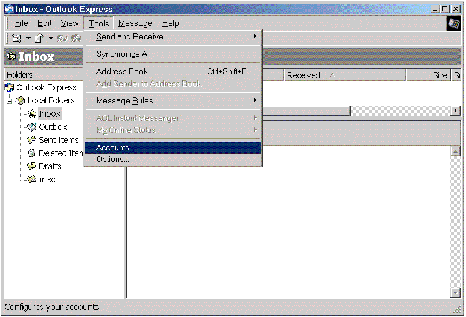
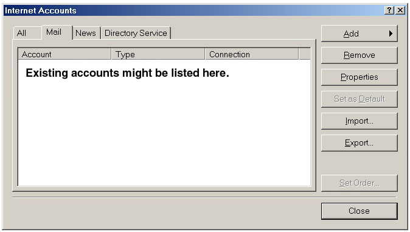
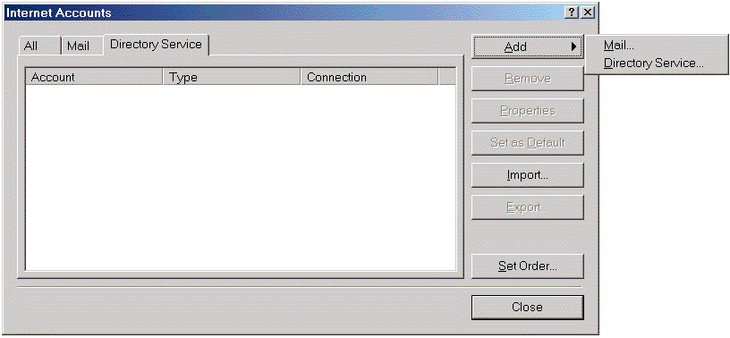
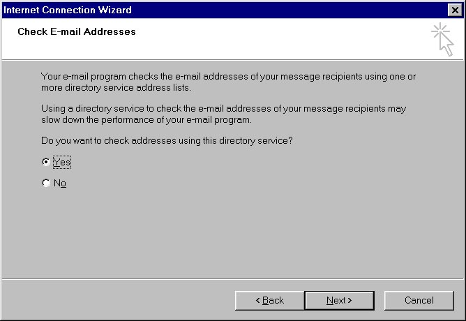
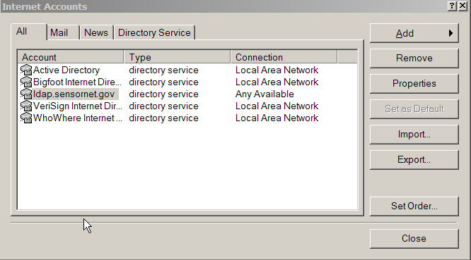
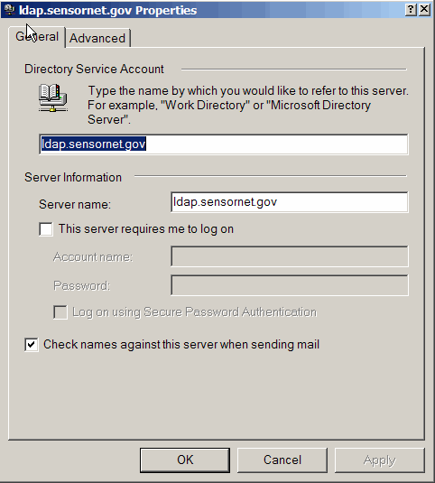

| By now, you probably know that in order to send secure
(specifically, encrypted) email to an individual involved in SensorNet
you will
need their public key (contained within their digital certificate). How
do you get their public key? Well, at SensorNet, we store people's
certificates in our online directory (LDAP). You can easily retrieve
their certificates via the directory and place them into your computer.
Listed below are the steps on how to do this. |
| |
| |
| First, we're going to make a new directory for Outlook
Express. On the top menubar, go to "Tools" and then "Accounts"
(see Figure 1). |
| |

Figure 1. |
| |
| In the new window, click on the "Directory Service"
tab on top (see Figure 2). |
| |

Figure 2. |
| |
| Now click on the "Add" button at the top right hand
corner of the window. Choose "Directory Service" (See Figure 3).
|
| |

Figure 3. |
| |
| |
| You'll now be instructed to enter various bits of
information on different screens. On the first screen, type in "ldap.sensornet.gov"
for the "Internet directory (LDAP) server" field. Click on "Next"
when you are finished (see Figure 4). |
| |

Figure 4. |
| |
| On the second page, click "Yes" when asked "Do you
want to check addresses using this directory service?". Click on "Next"
when you are finished (see Figure 5). |
| |

Figure 5. |
| |
| You will now be at a window which confirms that you have
successfully entered in all of your information. Click on "Finish"
(see Figure 6). |
| |

Figure 6. |
| |
| In the window illustrated by Figure 7, you should
now see an entry for "ldap.sensornet.gov" under the Directory
Service tab. |
| |

Figure 7. |
| |
| Now, making sure that the "ldap.sensornet.gov" entry
is
highlighted, click on the "Properties" button on the right hand
side of your window. You should see a window that appears similar to
that illustrated by Figure 8. |
| |

Figure 8. |
| |
| On this new window, click on the "Advanced" tab. The
window should now appear as shown in Figure 9. |
| |

Figure 9. |
| |
For the search base, enter exactly
"dc=sensornet,dc=gov"
Click on the SSL connection button and the port should change to 636 as
shown in Figure 9. Then then click on the "OK" button to
continue (See Figure 10). |
| |
Now we have to set up Outlook Express to use digital
certificates. Go to "Tools | Options" from the top menubar.
Select "Security" from the tabs, and then click on the "Advanced"
button near the bottom. You should then see a new window illustrated by
Figure 10.
In this window, make sure that "168 bits" is the option selected
in the drop-down menu, and that the checkboxes marked "Always
encrypt to myself when sending encrypted mail", "Include my
digital ID when sending signed messages", and "Add senders'
certificates to my address book" are all checked. Press "OK"
when done. |
| |

Figure 10. |